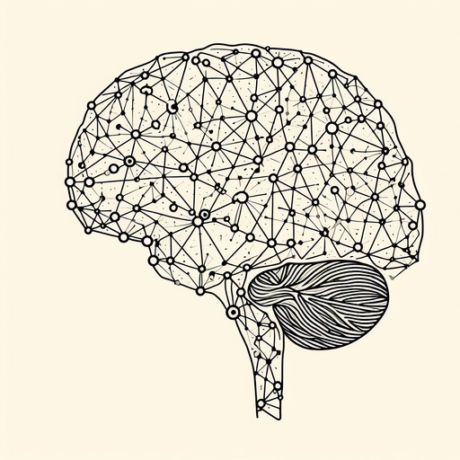

Traditional dialectics based on the "thesis-antithesis-synthesis" model falls short in addressing complex scientific problems devoid of clear opposition/antagonism. A more effective approach is essential for these intricate problems.
This paper introduces a novel dialectical method—centralized dialectics—based on "analysis-synthesis" for addressing complex phenomena that lack clear antagonistic features and are governed by parsimonious underlying mechanisms. When applied to neuroscience, this method is referred to as "dialectic neuroscience."
The proposed method mirrors Bayesian model selection, guided by criteria rationality, comprehensive accountability, and parsimony. Analytical components interact through synthesis, analogous to identifying the central missing piece of a jigsaw puzzle (with the peripheral pieces representing analytic facts), hence the term "centralized." The output is the theory or mechanism derived from this synthesis process through nonlinear or creative thinking.
Centralized dialectics principles have been implicitly utilized across various disciplines, particularly in modern physics, yet remain unarticulated. Major depressive disorder (MDD) serves as a demonstration of dialectic neuroscience, wherein the approach successfully identified an abnormal reciprocal suppressive network mechanism associated with MDD, which was later empirically validated. From an engineering perspective, synthetic results correspond to achieving local or global optima.
Centralized dialectics provides a rigorous, flexible, and interdisciplinary framework for complex problem-solving. It has the potential to reshape scientific standards, foster creative thinking, and enable cross-validation across diverse fields. This method could help frame non-linear thinking and creativity within a scientific framework. A structured formulation is recommended to ensure synthesis quality and to facilitate mutual verification among different parties.
